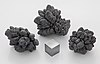

lead

Definition: Lead is a chemical element with the symbol Pb (from the Latin plumbum) and atomic number 82. It is a heavy metal that is denser than most common materials. Lead is soft and malleable, and also has a relatively low melting point. When freshly cut, lead is a shiny gray with a hint of blue. It tarnishes to a dull gray color when exposed to air. Lead has the highest atomic number of any stable element and three of its isotopes are endpoints of major nuclear decay chains of heavier elements. Lead is toxic, even in small amounts, especially to children.
Source: Wikipedia
Wikipedia Page (Something wrong with this association? Let us know.)
Wikidata Page (Something wrong with this association? Let us know.)